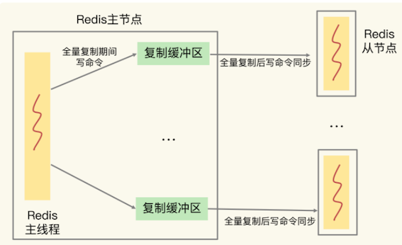

第五节 Redis缓冲区
缓冲区的功能其实很简单，主要就是用一块内存空间来暂时存放命令数据，以免出现因为数据和命令的处理速度慢于发送速度而导致的数据丢失和性能问题。
但因为缓冲区的内存空间有限，如果往里面写入数据的速度持续地大于从里面读取数据的速度，就会导致缓冲区需要越来越多的内存来暂存数据。当缓冲区占用的内存超出了设定的上限阈值时，就会出现缓冲区溢出。
如果不给缓冲区的大小设置上限，随着累积的数据越来越多，缓冲区占用内存空间越来越大，一旦耗尽了 Redis 实例所在机器的可用内存，就会导致 Redis 实例崩溃。
缓冲区是用来避免请求或数据丢失的惨案的
Redis 是典型的 client-server 架构，所有的操作命令都需要通过客户端发送给服务器端。
所以，缓冲区在 Redis 中的一个主要应用场景，就是在客户端和服务器端之间进行通信时，用来暂存客户端发送的命令数据，或者是服务器端返回给客户端的数据结果。此外，缓冲区的另一个主要应用场景，是在主从节点间进行数据同步时，用来暂存主节点接收的写命令和数据。
1、客户端输入和输出缓冲区
看看服务器端和客户端之间的缓冲区
为了避免客户端和服务器端的请求发送和处理速度不匹配，服务器端给每个连接的客户端都设置了一个输入缓冲区和输出缓冲区，我们称之为客户端输入缓冲区和输出缓冲区。
- 输入缓冲区会先把客户端发送过来的命令暂存起来，
- Redis 主线程再从输入缓冲区中读取命令，进行处理
- 当 Redis 主线程处理完数据后，会把结果写入到输出缓冲区，再通过输出缓冲区返回给客户端
2、如何应对输入缓冲区溢出？
2-1 缓冲区溢出检查
输入缓冲区就是用来暂存客户端发送的请求命令的，所以可能导致溢出的情况主要是下面两种：
- 写入了 bigkey，比如一下子写入了多个百万级别的集合类型数据；
- 服务器端处理请求的速度过慢，例如，Redis 主线程出现了间歇性阻塞，无法及时处理正常发送的请求，导致客户端发送的请求在缓冲区越积越多。
如何查看输入缓冲区的内存使用情况，以及如何避免溢出
要查看和服务器端相连的每个客户端对输入缓冲区的使用情况，我们可以使用 CLIENT LIST 命令：
CLIENT LIST
id=5 addr=127.0.0.1:50487 fd=9 name= age=4 idle=0 flags=N db=0 sub=0 psub=0 multi=-1 qbuf=26 qbuf-free=32742 obl=0 oll=0 omem=0 events=r cmd=client
CLIENT 命令返回的信息虽然很多，但我们只需要重点关注两类信息就可以了。
一类是与服务器端连接的客户端的信息。这个案例展示的是一个客户端的输入缓冲区情况，如果有多个客户端，输出结果中的 addr 会显示不同客户端的 IP 和端口号。
另一类是与输入缓冲区相关的三个参数：
cmd，表示客户端最新执行的命令。这个例子中执行的是 CLIENT 命令。qbuf，表示输入缓冲区已经使用的大小。这个例子中的 CLIENT 命令已使用了 26 字节大小的缓冲区。qbuf-free，表示输入缓冲区尚未使用的大小。这个例子中的 CLIENT 命令还可以使用 32742 字节的缓冲区。qbuf和qbuf-free的总和就是，Redis 服务器端当前为已连接的这个客户端分配的缓冲区总大小。这个例子中总共分配了26 + 32742 = 32768字节，也就是 32KB 的缓冲区。
2-2 缓冲区溢的风险
有了 CLIENT LIST 命令，我们就可以通过输出结果来判断客户端输入缓冲区的内存占用情况了。如果 qbuf 很大，而同时 qbuf-free 很小，就要引起注意了，因为这时候输入缓冲区已经占用了很多内存，而且没有什么空闲空间了。
此时，客户端再写入大量命令的话，就会引起客户端输入缓冲区溢出，Redis 的处理办法就是把客户端连接关闭，结果就是业务程序无法进行数据存取了。
通常情况下，Redis 服务器端不止服务一个客户端，当多个客户端连接占用的内存总量，超过了 Redis 的 maxmemory 配置项时（例如 4GB），就会触发 Redis 进行数据淘汰。一旦数据被淘汰出 Redis，再要访问这部分数据，就需要去后端数据库读取，这就降低了业务应用的访问性能
更糟糕的是，如果使用多个客户端，导致 Redis 内存占用过大，也会导致内存溢出（out-of-memory）问题，进而会引起 Redis 崩溃，给业务应用造成严重影响。
2-3 避免输入缓冲区溢出
避免输入缓冲区溢出。我们可以从两个角度去考虑如何避免，一是把缓冲区调大，二是从数据命令的发送和处理速度入手。
底有没有办法通过参数调整输入缓冲区的大小呢？答案是没有。
Redis 的客户端输入缓冲区大小的上限阈值，在代码中就设定为了 1GB。也就是说，Redis 服务器端允许为每个客户端最多暂存 1GB 的命令和数据。1GB 的大小，对于一般的生产环境已经是比较合适的了。
- 一方面，这个大小对于处理绝大部分客户端的请求已经够用了；
- 另一方面，如果再大的话，Redis 就有可能因为客户端占用了过多的内存资源而崩溃。
Redis 并没有提供参数让我们调节客户端输入缓冲区的大小。如果要避免输入缓冲区溢出，那我们就只能从数据命令的发送和处理速度入手，也就是前面提到的避免客户端写入 bigkey，以及避免 Redis 主线程阻塞。
3、如何应对输出缓冲区溢出？
Redis 的输出缓冲区暂存的是 Redis 主线程要返回给客户端的数据。一般来说，主线程返回给客户端的数据，既有简单且大小固定的 OK 响应（例如，执行 SET 命令）或报错信息，也有大小不固定的、包含具体数据的执行结果（例如，执行 HGET 命令）。
Redis 为每个客户端设置的输出缓冲区也包括两部分：
- 是一个大小为 16KB 的固定缓冲空间，用来暂存 OK 响应和出错信息；
- 是一个可以动态增加的缓冲空间，用来暂存大小可变的响应结果。
那什么情况下会发生输出缓冲区溢出呢？ 我为你总结了三种：
- 服务器端返回 bigkey 的大量结果；
- 执行了 MONITOR 命令；
- 缓冲区大小设置得不合理。
其中，bigkey 原本就会占用大量的内存空间，所以服务器端返回的结果包含 bigkey，必然会影响输出缓冲区
MONITOR 命令是用来监测 Redis 执行的。执行这个命令之后，就会持续输出监测到的各个命令操作，如下所示：
MONITOR
OK
1600617456.437129 [0 127.0.0.1:50487] "COMMAND"
1600617477.289667 [0 127.0.0.1:50487] "info" "memory"
MONITOR 的输出结果会持续占用输出缓冲区，并越占越多，最后的结果就是发生溢出。
我要给你一个小建议：MONITOR 命令主要用在调试环境中，不要在线上生产环境中持续使用 MONITOR。
如果在线上环境中偶尔使用 MONITOR 检查 Redis 的命令执行情况，是没问题的。
接下来，我们看下输出缓冲区大小设置的问题。
和输入缓冲区不同，我们可以通过 client-output-buffer-limit 配置项，来设置缓冲区的大小。具体设置的内容包括两方面：
- 设置缓冲区大小的上限阈值；
- 设置输出缓冲区持续写入数据的数量上限阈值，和持续写入数据的时间的上限阈值。
client-output-buffer-limit来设置输出缓冲区的大小
在具体使用 client-output-buffer-limit 来设置缓冲区大小的时候，我们需要先区分下客户端的类型。
- 对于和 Redis 实例进行交互的应用程序来说，主要使用两类客户端和 Redis 服务器端交互，分别是常规和 Redis 服务器端进行读写命令交互的普通客户端，以及订阅了 Redis 频道的订阅客户端。
- 此外，在 Redis 主从集群中，主节点上也有一类客户端（从节点客户端）用来和从节点进行数据同步，我会在介绍主从集群中的缓冲区时，向你具体介绍。
当我们给普通客户端设置缓冲区大小时，通常可以在 Redis 配置文件中进行这样的设置：
client-output-buffer-limit normal 0 0 0
其中，normal 表示当前设置的是普通客户端，第 1 个 0 设置的是缓冲区大小限制，第 2 个 0 和第 3 个 0 分别表示缓冲区持续写入量限制和持续写入时间限制。
对于普通客户端来说，它每发送完一个请求，会等到请求结果返回后，再发送下一个请求，这种发送方式称为阻塞式发送。
在这种情况下，如果不是读取体量特别大的 bigkey，服务器端的输出缓冲区一般不会被阻塞的。
所以，我们通常把普通客户端的缓冲区大小限制，以及持续写入量限制、持续写入时间限制都设置为 0，也就是不做限制。
- 对于订阅客户端来说，一旦订阅的 Redis 频道有消息了，服务器端都会通过输出缓冲区把消息发给客户端。
- 所以，订阅客户端和服务器间的消息发送方式，不属于阻塞式发送。
- 不过，如果频道消息较多的话，也会占用较多的输出缓冲区空间。
因此，我们会给订阅客户端设置缓冲区大小限制、缓冲区持续写入量限制，以及持续写入时间限制，可以在 Redis 配置文件中这样设置：
client-output-buffer-limit pubsub 8mb 2mb 60
其中，pubsub 参数表示当前是对订阅客户端进行设置；
- 8mb 表示
输出缓冲区的大小上限为 8MB，一旦实际占用的缓冲区大小要超过 8MB，服务器端就会直接关闭客户端的连接； - 2mb 和 60 表示，如果连续 60 秒内对输出缓冲区的写入量超过 2MB 的话，服务器端也会关闭客户端连接。
好了，我们来总结下如何应对输出缓冲区溢出：
- 避免 bigkey 操作返回大量数据结果；
- 避免在线上环境中持续使用 MONITOR 命令。
- 使用
client-output-buffer-limit设置合理的缓冲区大小上限，或是缓冲区连续写入时间和写入量上限。
4、主从集群中的缓冲区
主从集群间的数据复制包括全量复制和增量复制两种。
- 全量复制是同步所有数据，而增量复制只会把主从库网络断连期间主库收到的命令，同步给从库
- 无论在哪种形式的复制中，为了保证主从节点的数据一致，都会用到缓冲区。
- 但是，这两种复制场景下的缓冲区，在溢出影响和大小设置方面并不一样。
5、复制缓冲区的溢出问题
5-1 复制缓冲区的原因
在全量复制过程中，主节点在向从节点传输 RDB 文件的同时，会继续接收客户端发送的写命令请求。
- 这些写命令就会先保存在复制缓冲区中，等 RDB 文件传输完成后，再发送给从节点去执行。
- 主节点上会为每个从节点都维护一个复制缓冲区，来保证主从节点间的数据同步。

所以，如果在全量复制时，从节点接收和加载 RDB 较慢，同时主节点接收到了大量的写命令，写命令在复制缓冲区中就会越积越多，最终导致溢出。
- 其实，主节点上的复制缓冲区，本质上也是一个用于和从节点连接的客户端（我们称之为从节点客户端），使用的输出缓冲区。
- 复制缓冲区一旦发生溢出，主节点也会直接关闭和从节点进行复制操作的连接，导致全量复制失败。
5-2 如何避免复制缓冲区发生溢出呢？
- 我们可以控制主节点保存的数据量大小。按通常的使用经验，我们会把主节点的数据量控制在 2~4GB，这样可以让全量同步执行得更快些，避免复制缓冲区累积过多命令。
- 我们可以使用
client-output-buffer-limit配置项，来设置合理的复制缓冲区大小。设置的依据，就是主节点的数据量大小、主节点的写负载压力和主节点本身的内存大小。
config set client-output-buffer-limit slave 512mb 128mb 60
slave参数表明该配置项是针对复制缓冲区的。512mb代表将缓冲区大小的上限设置为 512MB；128mb和60代表的设置是，如果连续 60 秒内的写入量超过 128MB 的话，也会触发缓冲区溢出。
假设一条写命令数据是 1KB，那么，复制缓冲区可以累积 512K 条（512MB/1KB = 512K）写命令。同时，主节点在全量复制期间，可以承受的写命令速率上限是 2000 条 /s（128MB/1KB/60 约等于 2000）。
在实际应用中设置复制缓冲区的大小时，可以根据写命令数据的大小和应用的实际负载情况（也就是写命令速率），来粗略估计缓冲区中会累积的写命令数据量；
然后，再和所设置的复制缓冲区大小进行比较，判断设置的缓冲区大小是否足够支撑累积的写命令数据量。
主节点上复制缓冲区的内存开销，会是每个从节点客户端输出缓冲区占用内存的总和。如果集群中的从节点数非常多的话，主节点的内存开销就会非常大。所以，我们还必须得控制和主节点连接的从节点个数，不要使用大规模的主从集群。
为了避免复制缓冲区累积过多命令造成溢出，引发全量复制失败，我们可以控制主节点保存的数据量大小，并设置合理的复制缓冲区大小。同时，我们需要控制从节点的数量，来避免主节点中复制缓冲区占用过多内存的问题。
6、复制积压缓冲区的溢出问题
增量复制时使用的缓冲区，这个缓冲区称为复制积压缓冲区。
- 主节点在把接收到的写命令同步给从节点时，同时会把这些写命令写入复制积压缓冲区。
- 一旦从节点发生网络闪断，再次和主节点恢复连接后，从节点就会从复制积压缓冲区中，读取断连期间主节点接收到的写命令，进而进行增量同步，
如下图所示：
复制积压缓冲区了，repl_backlog_buffer,增量复制，复制积压缓冲区溢出的影响，以及如何应对复制积压缓冲区的溢出问题。
- 首先，复制积压缓冲区是一个大小有限的环形缓冲区。当主节点把复制积压缓冲区写满后，会覆盖缓冲区中的旧命令数据。如果从节点还没有同步这些旧命令数据，就会造成主从节点间重新开始执行全量复制。
- 其次，为了应对复制积压缓冲区的溢出问题，我们可以调整复制积压缓冲区的大小，也就是设置
repl_backlog_size这个参数的值。
7、本节小结
使用缓冲区以后，当命令数据的接收方处理速度跟不上发送方的发送速度时，缓冲区可以避免命令数据的丢失。
按照缓冲区的用途，例如是用于客户端通信还是用于主从节点复制，我把缓冲区分成了
- 客户端的输入
- 客户端输出缓冲区
- 主从集群中主节点上的复制缓冲区
- 复制积压缓冲区
现在，从缓冲区溢出对 Redis 的影响的角度，我再把这四个缓冲区分成两类做个总结。
- 缓冲区溢出导致网络连接关闭：普通客户端、订阅客户端，以及从节点客户端，它们使用的缓冲区，本质上都是 Redis 客户端和服务器端之间，或是主从节点之间为了传输命令数据而维护的。这些缓冲区一旦发生溢出，处理机制都是直接把客户端和服务器端的连接，或是主从节点间的连接关闭。网络连接关闭造成的直接影响，就是业务程序无法读写 Redis，或者是主从节点全量同步失败，需要重新执行。
- 缓冲区溢出导致命令数据丢失：主节点上的复制积压缓冲区属于环形缓冲区，一旦发生溢出，新写入的命令数据就会覆盖旧的命令数据，导致旧命令数据的丢失，进而导致主从节点重新进行全量复制。
从本质上看，缓冲区溢出，无非就是三个原因：
- 命令数据发送过快过大；
- 命令数据处理较慢；
- 缓冲区空间过小。
明白了这个，我们就可以有针对性地拿出应对策略了。
- 针对命令数据发送过快过大的问题，对于普通客户端来说可以避免 bigkey，而对于复制缓冲区来说，就是避免过大的 RDB 文件。
- 针对命令数据处理较慢的问题，解决方案就是减少 Redis 主线程上的阻塞操作，例如使用异步的删除操作。
- 针对缓冲区空间过小的问题，解决方案就是使用
client-output-buffer-limit配置项设置合理的输出缓冲区、复制缓冲区和复制积压缓冲区大小。当然，我们不要忘了，输入缓冲区的大小默认是固定的，我们无法通过配置来修改它，除非直接去修改 Redis 源码。